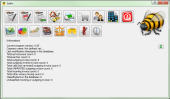

It's an excellent tool to keep track your company financial state.
It stores the data in sqlite database, so you can use this program everywhere, don't need server connection or internet. This program can run on Win32 and Linux too.
SelfIn |

|

|
Self Invoicer program (C++)
Selfin is a complex small company invoice creator and financial manager program. The primary purpouse is creating outgoing invoices (Reverse invoices too), but you can also record and manage your incoming invoices, payment informations and finally it can generate bank account balace from these data. Later you can dive into the invoices, query to partners, dates, amounts, etc. This program can generate excel reports from the data to assist later processing. You can also classify your invoices to separate them by your aspects. Selfin can generate the VAT, and charge calculations according to your classifications too.It's an excellent tool to keep track your company financial state.
It stores the data in sqlite database, so you can use this program everywhere, don't need server connection or internet. This program can run on Win32 and Linux too.
{kind=link}
{kind=link}
{kind=link}
{kind=link}
| Author: | Péter Deák |
| Contact Email: |  at gmail.com at gmail.com |